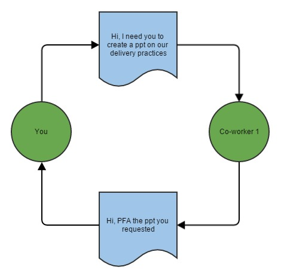
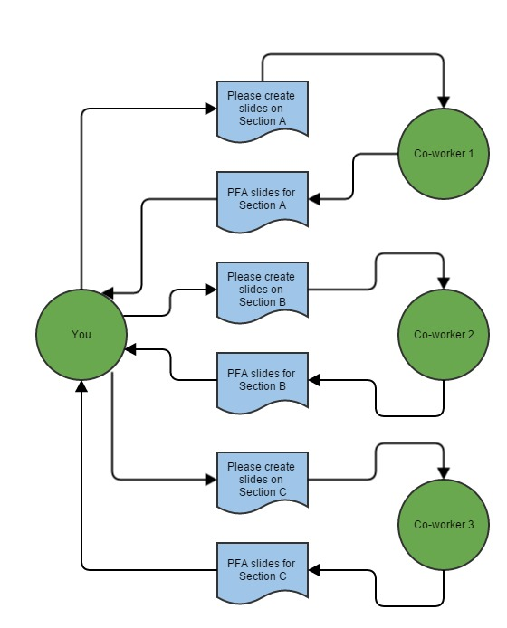

Recently, I discovered a new concurrency model known as the Actor Model. This post provides a brief introduction to it.
Concurrency & Parallelism
Before I dive into the Actor Model, let me briefly touch upon the concepts of concurrency and parallelism.
There is a lot of debate about the exact definitions of these terms. For the purposes of this article, I am going to use the below definitions. Also I am going to use the term 'process' a lot. Here, the term 'process' is not an OS-level process but a more general concept i.e. some abstract computation.
Concurrency - Concurrency is a property of an application or a system in which two or more processes are making progress during a specific time period. While all (or a subset) of these processes could execute simultaneously, this is neither guaranteed nor necessary for concurrency.
Parallelism - Parallelism is a condition in which two or more processes are executing simultaneously.
Thus, concurrency is an application or system attribute while parallelism is more a runtime behavior.
Several processes in a concurrent application or system could run in parallel or a single process could have several sub-processes which run in parallel. But, parallelism is not an inherent attribute of concurrent applications or systems.
Concurrency Types
I just want to talk about one last thing, before I go into the Actor Model, namely, the types of concurrency. Concurrency can be broadly divided into 2 types depending on how processes interact with each other.
Shared-state Concurrency - This mainly involves multiple processes communicating with each other by accessing some mutable data which requires co-ordination using tools such as locks, synchronized blocks, mutexes, semaphores etc. This is usually used in concurrent applications
Message-passing - This mainly involves multiple processes communicating with each other using messages. Thus, since there is no shared state between processes, the need for locks etc is mitigated. This is usually used in concurrent systems.
The Actor Model belongs to the Message-passing type of concurrency.
Actor Model
Though I only recently discovered it, the Actor Model has been in existence since the 1970s. The basic concept behind it is surprisingly intuitive.
The easiest way to understand it by using the metaphor of Email systems.
Email System Metaphor
Take a scenario where you want one of your co-workers to create a Powerpoint presentation. You would send her an email informing her that you need a presentation made on some topic. Once she has finished making the presentation, she will send you an email back saying that she has done it. Additionally, the email will contain the presentation as an attachment.

If the presentation is large and has to be made on a tight schedule, you might as k multiple co-workers to make slides for specific sections which you would later combine.

This is the Actor Model in its simplest form.
Terminology
In the Actor Model terminology, you and your co-workers are Actors and the emails that you exchange are messages. These messages are immutable i.e. they cannot be modified. The organization that you and your co-workers belong to are an Actor System. You can have Actors from different Actor Systems sending each other messages just like people from different organizations can send each other emails. Each Actor is identified by an address relative to the Actor System to which it belongs.
Each Actor has its own mailbox, where messages are queued. Each Actor reads the messages in its mailbox in order. Depending on the message, the Actor can execute some process, forward the message to another Actor, reply back to the sender or simply ignore the message.
Message passing in the Actor Model is asynchronous in nature. Just like you can send an email to a co-worker and work on something else until she replies, so can an Actor.
Advantages
The greatest advantage of the Actor Model is that it provides a higher level of abstraction over such primitives such as threads, locks etc. It is much easier to model a problem domain using the paradigm of the Actor Model, since it mimics our daily life.
Additionally, due to the inherent immutability of messages the challenges of shared state is mitigated, greatly reducing the occurrence of concurrency problems such as race conditions and deadlocks.
Another added advantage is that of asynchronous message passing. This allows each individual actor to work on some other process without having to block while it waits for some other actor to finish processing. Thus, this increases the throughput of the application or system as a whole.
Popular Implementations
Some of the popular implementations of the Actor Model are given below
Akka - Arguably the most popular implementation of the Actor Model. This framework mainly targets the JVM and can be used by the Java & Scala programming languages. There exist various ports for other runtime environment like Akka.NET for the .NET framework. It is used by projects like Apache Spark, Play Framework, Coursera among others
Erlang - The concurrency implementation used in the Erlang programming language is based on the Actor Model. Projects including CouchDB, Riak and RabbitMQ are written primarily in Erlang
Project Orleans - An implementation by Microsoft Research designed primarily for cloud applications. It is famously used as the platform for all cloud services of the XBox game Halo 4
Conclusion
I hope the above post gives a brief overview of the Actor Model. Considering the current trend towards increasingly concurrent applications and systems, this model adds a new tool that can be added to our concurrency toolbox. I hope to expand on this post as my own understanding of the possibilities and limitations of this model increases.